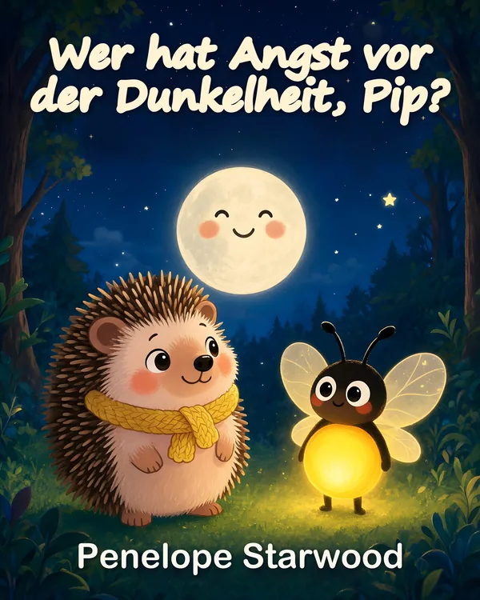

Bilderbuch · von 3 bis 6 Jahren
Wer hat Angst vor der Dunkelheit, Pip?
Schritt für Schritt wird die Dunkelheit weniger unheimlich.
Wenn die Sonne hinter den Hügeln versinkt, zieht der kleine Igel Pip seinen gelben Schal fest und versteckt sich unter seiner Decke aus Moos. Die Dunkelheit ist einfach zu groß!
Da funkelt ein winziges Licht an der Tür. Glow, das Glühwürmchen, will ihm etwas zeigen: einen lächelnden Marienkäfer auf einem Blatt, den Mond zwischen den Zweigen einer alten Eiche, einen glänzenden Kieselstein im Gras und einen Himmel voller Sterne.
Eine sanfte Gutenachtgeschichte über den Mut, der mit kleinen Schritten wächst, für alle Kleinen, die Angst vor der Dunkelheit haben.
-
Deutsche AusgabeWer hat Angst vor der Dunkelheit, Pip?Taschenbuch und Kindle-E-BookDemnächst